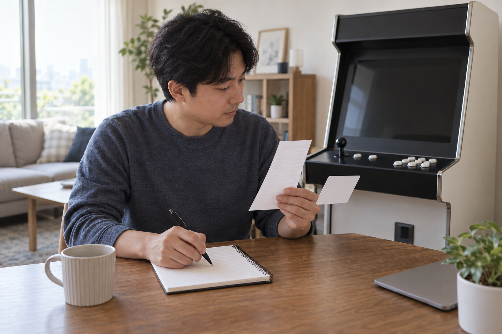
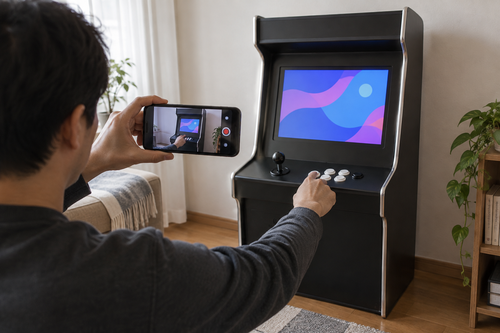

가정용 오락기 A/S를 요청하기 전에는 주문한 제품명과 구매 내역, 문제가 시작된 상황, 같은 증상이 다시 나타나는 순서를 모아 두세요. 화면 사진이나 조작 영상이 있으면 함께 준비하고, 제품을 열거나 부품을 바꾸기 전에 판매자에게 현재 상태와 이미 확인한 내용을 전달하세요.

주문 제품과 구매 내역을 먼저 맞춰보세요
주문 내역에서 상품명, 구매처와 주문 시점을 확인하고 실제 기기의 이름이나 동봉 안내서와 대조하세요. 노리박스 제품 목록에는 스탠드형, 좌식형, TV 연결형과 게임팩이 별도 상품으로 안내되므로 겉모양만으로 모델을 짐작하지 않는 편이 좋습니다. 주문 번호가 있다면 문의할 때 함께 준비하되, 공개 게시판에는 개인정보를 그대로 올리지 마세요.
구매 내역의 상품명과 실제 제품 구성을 맞춰야 해당 모델의 안내를 받기 쉽습니다.
- 주문한 상품명과 구매처
- 주문 시점과 주문 번호
- 함께 사용 중인 게임팩이나 연결 기기
- 제품 안내서 또는 주문 페이지에서 확인한 구성

문제가 나타나는 순서를 사진이나 영상으로 남기세요
전원을 켠 뒤 어느 화면과 조작에서 문제가 생기는지 시간 순서대로 적어 보세요. 화면에 표시가 있다면 사진으로 남기고, 버튼이나 조이스틱 문제는 손의 조작과 화면 반응이 함께 보이는 짧은 영상이 설명에 도움이 됩니다. 이미 어떤 기본 점검을 했는지도 적어 두면 같은 과정을 반복하지 않고 다음 안내를 받을 수 있습니다.
증상이 시작되는 화면과 직전 조작을 함께 기록하면 판매자가 상황을 재현하기 쉽습니다.
게임이 실행되지 않을 때의 기본 확인 순서와 조이스틱·버튼 문제를 구분하는 방법을 참고해 증상을 나눠 적을 수 있습니다.
안전한 외부 확인까지만 진행하세요
제품 안내에 적힌 종료 순서에 따라 전원을 끄고, 외부에서 보이는 전원선과 연결선이 빠지거나 눌렸는지만 살펴보세요. 조작부나 본체를 열거나 인터넷에서 찾은 파일을 설치하면 원래 증상이 달라져 설명하기 어려울 수 있습니다. 탄 냄새나 손상된 전선처럼 눈에 띄는 이상이 있다면 사용을 멈추고 연결 상태를 그대로 기록해 문의하세요.
A/S 문의 전 점검은 제품 안내에 나온 외부 연결 상태 확인 범위에서 멈추는 편이 좋습니다.
문의 채널에 한 번에 전달할 내용을 정리하세요
노리박스 사이트에는 연락 페이지와 고객센터 전화, 카카오톡 상담 채널이 안내되어 있습니다. 문의할 때는 제품명과 구매 내역, 증상, 발생 시점, 사진·영상, 이미 해 본 점검을 한 메시지에 정리하고 어떤 조치를 해야 하는지 물어보세요. 노리박스 브랜드 소개에는 판매 뒤 오류와 문의, A/S와 부품 문제를 직접 다뤄 온 과정이 담겨 있습니다. 다만 수리 방법이나 지원 범위는 제품과 상황에 따라 다르므로 답변을 받은 뒤 진행해야 합니다.
제품 정보와 증상 기록을 함께 전달하면 다음 점검이나 접수 방법을 구체적으로 확인하기 쉽습니다.
노리박스 제품과 해당 판매 페이지는 제품자세히보기에서 확인하세요.